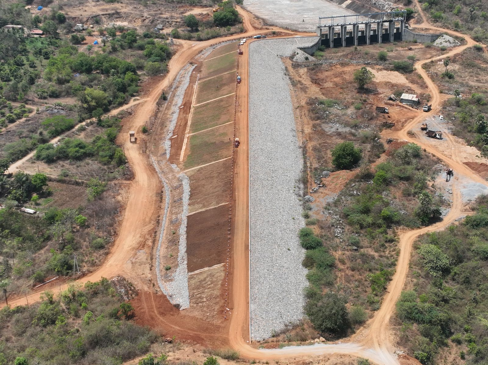
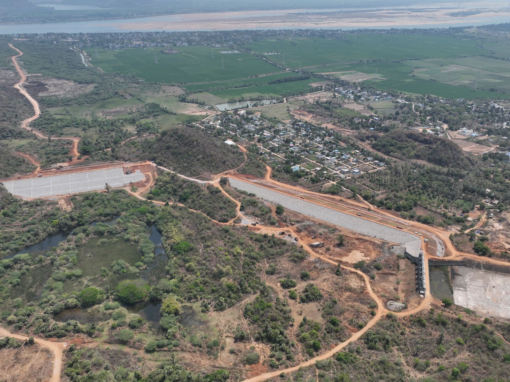
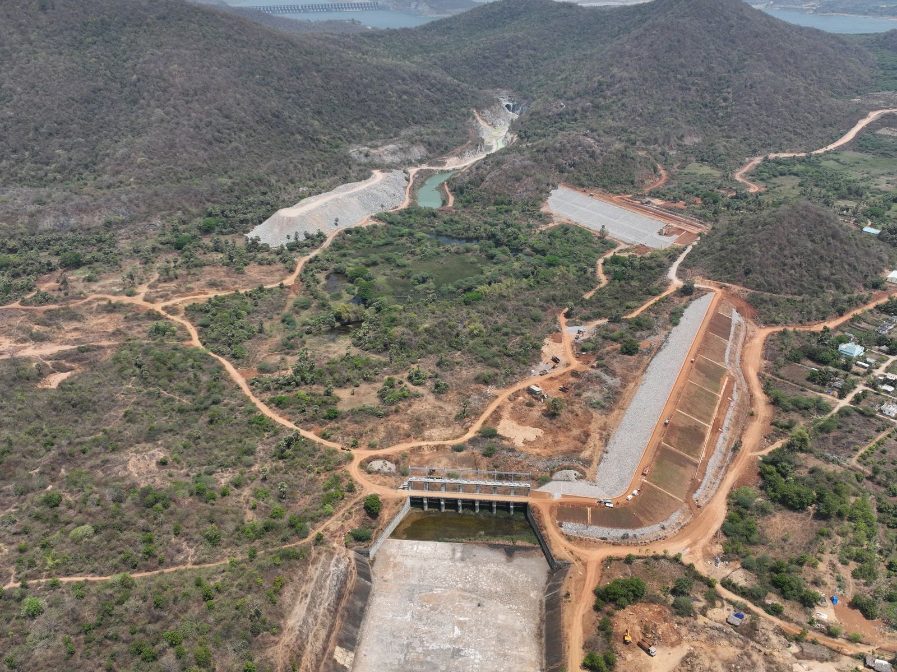
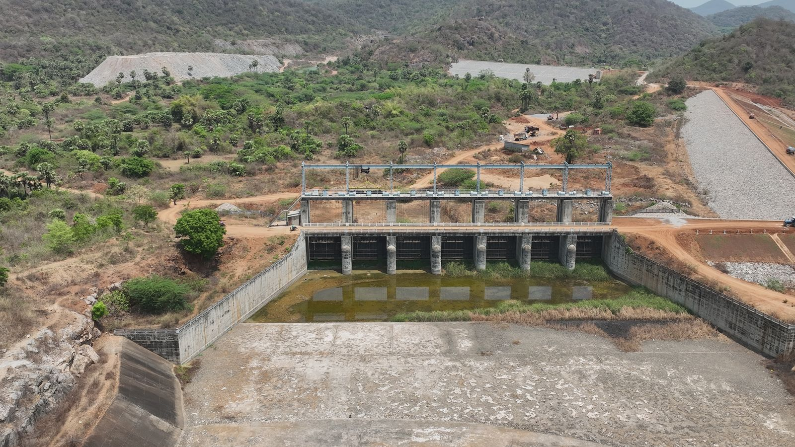
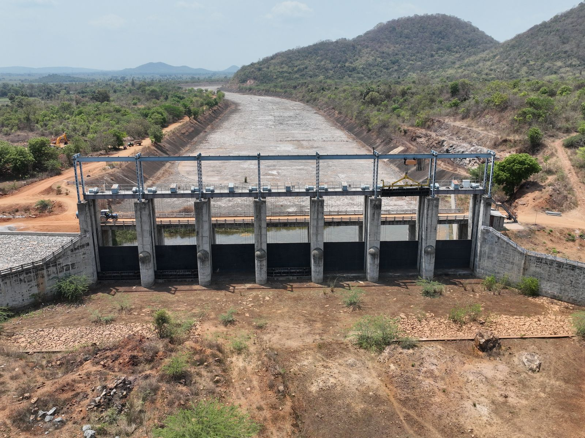
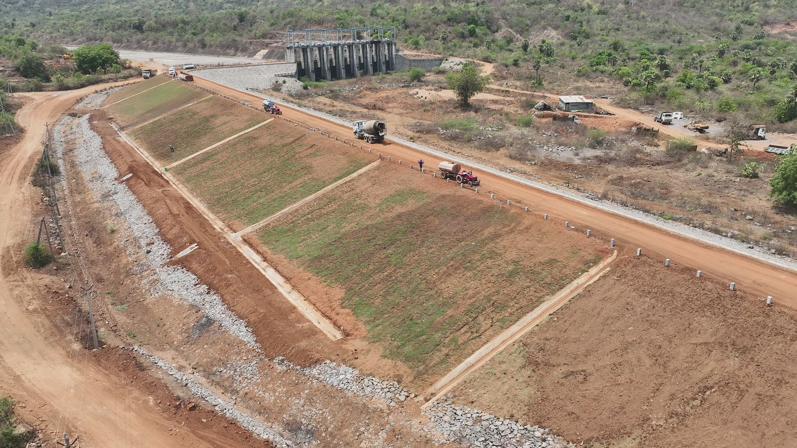

Mana Infrastructure has a strong legacy in irrigation construction, delivering critical water infrastructure including barrages, reservoirs, deep-cut canals, flood bank formation, and major irrigation packages across southern India.
Our marquee projects include works under the HNSS (Handri Neeva Sujala Sravanthi) and Jurala irrigation schemes in Andhra Pradesh and Telangana, contributing to the region's agricultural lifeline and water security.

Comprehensive irrigation infrastructure from barrages to last-mile canal networks.
Design and construction of barrages with spillway gates, piers, and energy dissipation systems.
Main canals, distributary canals, and deep-cut canal construction with lined and unlined sections.
Earth dam construction, reservoir embankments, and water storage infrastructure.
Flood bank formation, guide bunds, and river training works for water management.
Construction of pump houses and intake structures for lift irrigation schemes.
Aqueducts, siphons, and cross-drainage structures for uninterrupted water flow.
Our irrigation and barrage construction work across Andhra Pradesh and Telangana.




Get in touch to learn more about our irrigation infrastructure and barrage construction capabilities.
Contact Us